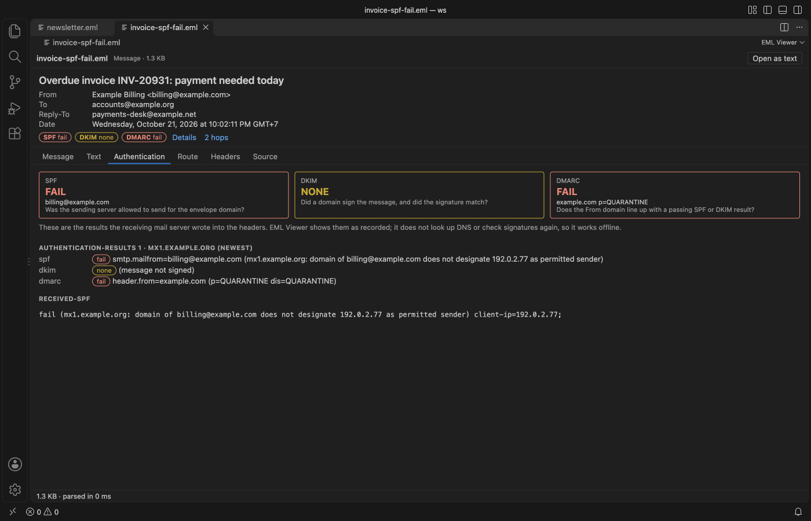

Open files in VS Code and Cursor / Office files
Check SPF, DKIM and DMARC of a suspicious email
Save the message as an .eml file, or open the .mbox it is in, with EML Viewer & Email Preview, Headers & MBOX. Badges under the header card show the SPF, DKIM and DMARC results, and the Authentication tab shows each Authentication-Results header, the DKIM signatures, Received-SPF and the ARC chain. These are the results the receiving mail server wrote. EML Viewer does not look up DNS or check signatures again, so it works offline. Remote images stay blocked, so opening the message does not tell the sender. The extension is free. Zovo Pro (USD 19 once) adds Mail list to CSV and two other tools, with 3 free tries each.
Free, MIT license. Extension ID zovo.eml-viewer, version 0.2.2. Needs VS Code 1.90.0 or newer.
Also free from Zovo: DOCX Viewer & ODT Viewer, VS Code Marketplace · Open VSX (Cursor, Windsurf).

Steps in VS Code
- Install EML Viewer from the Marketplace, or press Ctrl+P (Cmd+P on macOS) and run
ext install zovo.eml-viewer. - Save the suspicious message as an
.emlfile from your mail client, then click it in the VS Code Explorer. A.mboxmailbox opens the same way, with a list of messages. Remote images stay blocked. - Look at the badges under the header card. SPF, DKIM and DMARC are green for pass, red for fail and yellow for none or neutral.
- Click Details, or the Authentication tab. Each Authentication-Results header is listed with the server that wrote it, and the newest one is marked. That one is normally from your own mail server. Below are the DKIM signatures in the message (domain, selector, algorithm), Received-SPF and the ARC chain.
- Compare From with Reply-To. The header card shows Reply-To only when it differs from From, which means a reply would go to another address.
- Open the Route tab. It lists every Received hop, oldest first, with hostnames, IPs, protocol, TLS and the delay between hops. Hops over 5 minutes are marked.
Where Zovo Pro saves time
Reading .eml, .emlx and .mbox files, blocked remote images, the SPF, DKIM and DMARC badges, the route, headers and source, mailbox search and sort, and saving attachments one by one are free.
When a whole mailbox or a folder of reported messages needs checking, Mail list to CSV writes one row per message with the date, sender, recipients, subject, attachment names, size, the SPF, DKIM and DMARC results and the hop count. Filter the dmarc column in Excel or Numbers to find every message that failed. The other two Pro tools save all attachments of a message, a mailbox or a folder at once, and split an .mbox into one .eml file per message.
With Mail list to CSV (Zovo Pro)
- Run "EML Viewer: Mail list to CSV (Zovo Pro)" from the Command Palette, or pick "Mail list to CSV (Zovo Pro)" from the
...menu of an open mail file. - Pick the mail files or the folder when it asks.
- Pick where to save the CSV. A try counts only when the file is saved, and mail files are never overwritten.
Mail list to CSV works 3 times on your computer before it asks for a license, and a try counts only when you get a result. Opening a file shows no popup and no countdown.
Zovo Pro costs USD 19 once. It is not a subscription, and it turns on the Pro tools in every Zovo extension, not only EML Viewer. After a card payment (Stripe) your license key shows on the next page. In VS Code, run "Zovo Pro: Enter Zovo Pro license key" from the Command Palette and paste it. The key is checked on your computer, with no network call. With GitHub Sponsors, pick the "$19 one time" tier, then run "Zovo Pro: I already paid: unlock with GitHub Sponsors" and sign in with the same GitHub account. With PayPal, send USD 19 with "Zovo Pro" in the note and the key comes by email within a day.
A team of 5: USD 59 once, by card or by PayPal. Every rule and every Pro tool is on the Zovo Pro page.
Steps in Cursor, Windsurf or VSCodium
- Open the Extensions view with Ctrl+Shift+X (Cmd+Shift+X on macOS).
- Search for
zovo.eml-viewerand click Install. Cursor, Windsurf and VSCodium install from Open VSX, where it is published aszovo/eml-viewer. - If your editor has no gallery, download the .vsix from the Open VSX page and run "Extensions: Install from VSIX...".
- Then use it the same way as in VS Code.
What EML Viewer handles
.emlfiles saved by Outlook, Thunderbird, Gmail and most other clients.- Apple Mail
.emlxfiles, and.mboxor.mbxmailboxes from Thunderbird, Gmail Takeout, Apple Mail export and mail servers. - Authentication-Results, DKIM signatures, Received-SPF and the ARC chain.
- HTML messages, shown in a sandboxed frame with no script rights, after scripts, frames, forms and
javascript:links are removed.
What it does not do
- It shows the results the receiving server recorded. It does not query DNS or check DKIM signatures again.
- A message from a Sent folder or written by a script often has no Authentication-Results header, and the tab says so.
- Outlook
.msgand.pstfiles are not supported. - Files over 4 GB do not open, and a single message over 200 MB shows a message instead (setting
emlViewer.maxMessageMB).
Other options
- Google Admin Toolbox Messageheader. A free web page from Google. Paste the headers and it shows the SPF, DKIM and DMARC results and the delay between hops. The headers leave your computer.
- Show original in Gmail. For mail in a Gmail account, "Show original" lists the SPF, DKIM and DMARC results above the raw message.
- Any text editor. Free. Open the
.emlas text and search for Authentication-Results. No badges and no summary.
Install counts and Open VSX status were checked on 12 November 2026. Descriptions in quotes are the extensions' own.
Questions
Does EML Viewer check SPF and DKIM itself?
No. It shows the results that the receiving mail server wrote into the headers, so it works offline. It does not look up DNS records or check signatures again.
Can opening the email tell the sender?
No. Remote images and tracking pixels stay blocked until you click Show images for that tab, and scripts in the message never run.
Why does a badge say none?
The message has no recorded result for that check. Messages from a Sent folder or written by a script often have none. A yellow none badge means nothing was recorded, not that the check passed.
Does it work in Cursor or Windsurf?
Yes. Cursor, Windsurf and VSCodium install extensions from Open VSX. Search for the extension in their Extensions view and install it there.
More about EML Viewer
Read the EML Viewer page for every feature and setting, or the source code on GitHub.
Related guides
- DOCX Viewer & ODT Viewer on the VS Code Marketplace (also on Open VSX). Shows Word .docx, .doc, .odt and .rtf files as pages, with a dark mode.
- MBOX to EML in VS Code, one file per message
- Open a .docx Word file in VS Code
- View a PowerPoint .pptx file in VS Code
- Read PDFs in dark mode in VS Code
Support this work
If this extension saves you time, you can support the work on GitHub Sponsors. Monthly tiers start at $5, and one-time tiers start at $15. Sponsorship is optional, and the tool works the same without it.
Need your format supported?
Open a format request with a sample file, and I reply there whether it can be done. For USD 299 once, through this GitHub Sponsors tier, I add your file format or a missing feature to this extension, with tests, within 7 days.